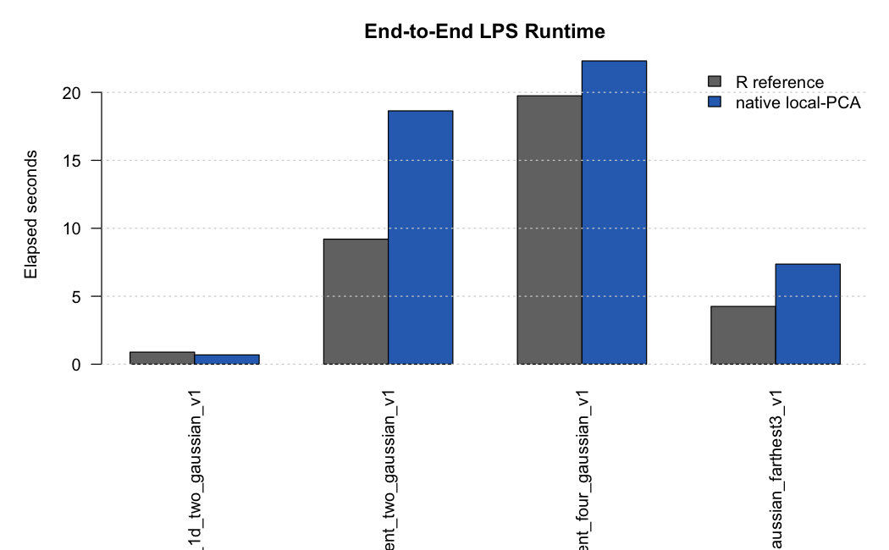
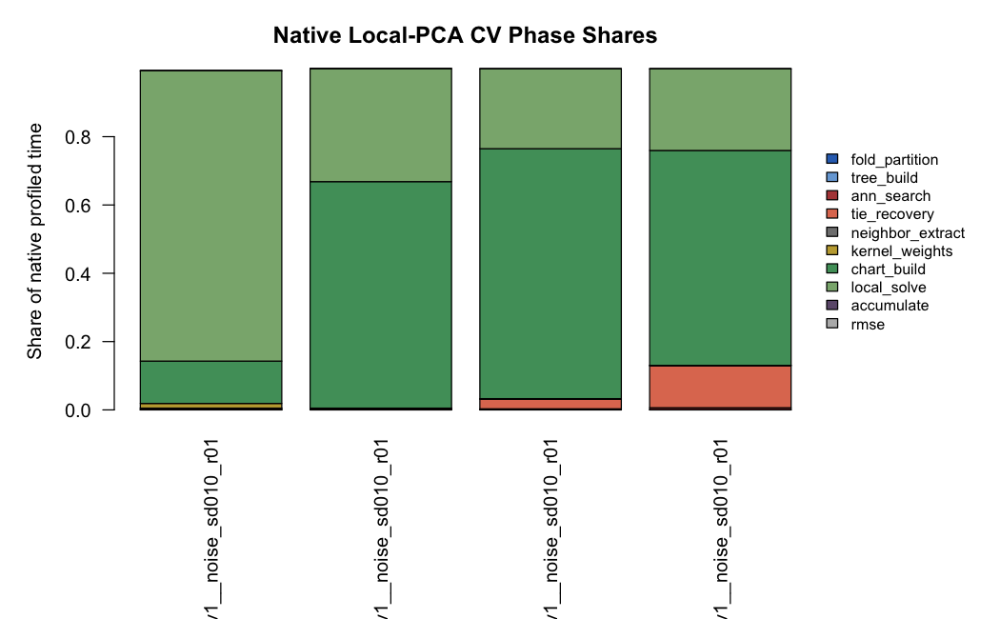

Generated 2026-06-04 21:56:20 EDT.
backend = "cpp.local.pca" path for local-PCA LPS on four P7 rows. It does not change package defaults.
| truth.id | geometry.family | n | ambient.dimension | candidate.count | r.fit.elapsed.seconds | cpp.fit.elapsed.seconds | runtime.speedup.r.over.cpp | cpp.profile.internal.seconds | cpp.cv.unprofiled.seconds | profile.rmse.matches.unprofiled.max.abs.delta |
|---|---|---|---|---|---|---|---|---|---|---|
| p7d_1d_two_gaussian_v1 | controlled_1d | 200 | 1 | 84 | 0.888 | 0.685 | 1.2960 | 0.6056 | 0.601 | 0 |
| p7d_hd1_latent_two_gaussian_v1 | controlled_highdim | 200 | 100 | 84 | 9.200 | 18.640 | 0.4936 | 17.0000 | 16.820 | 0 |
| p7d_hd3_latent_four_gaussian_v1 | controlled_highdim | 600 | 99 | 84 | 19.750 | 22.310 | 0.8850 | 19.0500 | 19.050 | 0 |
| p7d_16s_graph_gaussian_farthest3_v1 | real16s | 500 | 178 | 12 | 4.250 | 7.363 | 0.5772 | 5.3130 | 5.424 | 0 |

| dataset.id | phase | seconds | share.percent |
|---|---|---|---|
| p7d_16s_graph_gaussian_farthest3_v1__noise_sd010_r01 | chart_build | 3.343000 | 62.9300 |
| p7d_16s_graph_gaussian_farthest3_v1__noise_sd010_r01 | local_solve | 1.271000 | 23.9300 |
| p7d_16s_graph_gaussian_farthest3_v1__noise_sd010_r01 | tie_recovery | 0.654600 | 12.3200 |
| p7d_1d_two_gaussian_v1__noise_sd010_r01 | local_solve | 0.514900 | 85.0100 |
| p7d_1d_two_gaussian_v1__noise_sd010_r01 | chart_build | 0.075140 | 12.4100 |
| p7d_1d_two_gaussian_v1__noise_sd010_r01 | kernel_weights | 0.008229 | 1.3590 |
| p7d_hd1_latent_two_gaussian_v1__noise_sd010_r01 | chart_build | 11.270000 | 66.3200 |
| p7d_hd1_latent_two_gaussian_v1__noise_sd010_r01 | local_solve | 5.626000 | 33.1000 |
| p7d_hd1_latent_two_gaussian_v1__noise_sd010_r01 | tie_recovery | 0.062710 | 0.3689 |
| p7d_hd3_latent_four_gaussian_v1__noise_sd010_r01 | chart_build | 13.940000 | 73.1900 |
| p7d_hd3_latent_four_gaussian_v1__noise_sd010_r01 | local_solve | 4.460000 | 23.4100 |
| p7d_hd3_latent_four_gaussian_v1__noise_sd010_r01 | tie_recovery | 0.540000 | 2.8340 |
| dataset.id | truth.id | geometry.family | n | ambient.dimension | profile.sample.policy | profile.sample.n | candidate.count | folds | trees | targets | ann.searches | tie.recoveries | candidate.evals | chart.builds | chart.cache.hits | local.solves |
|---|---|---|---|---|---|---|---|---|---|---|---|---|---|---|---|---|
| p7d_1d_two_gaussian_v1__noise_sd010_r01 | p7d_1d_two_gaussian_v1 | controlled_1d | 200 | 1 | full_dataset | 200 | 84 | 5 | 5 | 200 | 200 | 200 | 16800 | 4200 | 12600 | 16800 |
| p7d_hd1_latent_two_gaussian_v1__noise_sd010_r01 | p7d_hd1_latent_two_gaussian_v1 | controlled_highdim | 200 | 100 | full_dataset | 200 | 84 | 5 | 5 | 200 | 200 | 200 | 16800 | 8400 | 8400 | 16800 |
| p7d_hd3_latent_four_gaussian_v1__noise_sd010_r01 | p7d_hd3_latent_four_gaussian_v1 | controlled_highdim | 600 | 99 | full_dataset | 600 | 84 | 5 | 5 | 600 | 600 | 600 | 50400 | 12600 | 37800 | 50400 |
| p7d_16s_graph_gaussian_farthest3_v1__noise_sd010_r01 | p7d_16s_graph_gaussian_farthest3_v1 | real16s | 500 | 178 | deterministic_16s_subset_n500 | 500 | 12 | 5 | 5 | 500 | 500 | 500 | 6000 | 2500 | 3500 | 6000 |
K9 shows that chart_build is the dominant native phase on the hard high-dimensional and 16S profiling rows. ANN search and deterministic tie recovery are measurable but not the primary bottleneck. The next optimization should therefore target local PCA chart construction: avoid redundant SVD work across support sizes and chart dimensions where possible, consider prefix/nested-support reuse, and only then optimize the local polynomial solve path. Do not promote cpp.local.pca to backend = 'auto' until this chart-construction bottleneck is addressed or a size/dimension-dependent backend chooser is justified.
tables/k9_profile_summary.csvtables/k9_native_phase_timing.csvtables/k9_native_operation_counts.csvtables/k9_chart_dimension_table.csvk9_lps_phase_profile_results.rds